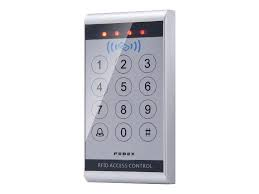

|  |
Painéis de controle de acesso (FX04)Especificações PrincipaisCapacidade de Portas: O FX04 é projetado para controlar até 4 portas, podendo ser expandido conforme a necessidade através da adição de módulos adicionais. Métodos de Autenticação:: Suporta múltiplos métodos de autenticação, incluindo cartões RFID, biometria (impressão digital, reconhecimento facial), PIN e combinações desses métodos para maior segurança. Comunicação e Conectividade: Oferece múltiplas opções de conectividade, incluindo TCP/IP, RS485 e portas Wiegand, permitindo integração com diversos dispositivos e sistemas de controle de acesso. Alguns modelos também incluem conectividade Wi-Fi e Bluetooth para maior flexibilidade na instalação e gerenciamento. Software de Gestão: Compatível com software de gestão de controle de acesso, que permite a configuração, monitoramento e geração de relatórios detalhados sobre o uso e acessos em tempo real. O software geralmente inclui funcionalidades avançadas como a definição de horários de acesso, níveis de acesso e a integração com outros sistemas de segurança, como CFTV e alarmes. Segurança e Criptografia: Equipado com medidas de segurança avançadas, incluindo criptografia de dados e comunicação segura para evitar tentativas de invasão e garantir a integridade dos dados. Interface de Usuário: Possui uma interface de usuário intuitiva, muitas vezes com display LCD e teclado para fácil configuração e operação. Alguns modelos incluem interfaces gráficas baseadas em web para configuração e monitoramento remoto. Integração com Sistemas de Segurança: Integração com sistemas de alarme, detecção de incêndio e monitoramento de vídeo, permitindo uma abordagem holística à segurança do edifício. Suporta funções como anti-passback, monitoramento em tempo real e controle de visitantes. Backup e Redundância: Equipado com opções de backup de dados e fontes de alimentação redundantes para garantir a operação contínua em caso de falhas de energia ou problemas técnicos. Expansibilidade: Modularidade que permite a expansão do sistema conforme necessário, facilitando a adaptação a mudanças nas necessidades de segurança ou crescimento da instalação. Quer Comprar ou saber mais informações? Contacte-nos! |